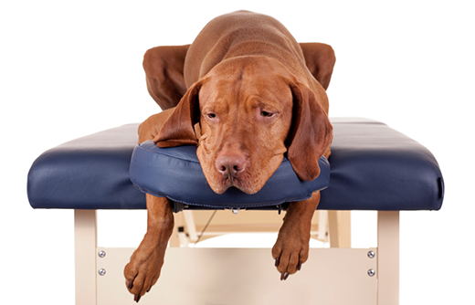

Our dogs hold the most special corner of our hearts. The way they greet us at the door, wagging their furry tail, and ready to cheer us up when we return home tired. Doggies are emotional companions full of life, and thus it is miserable to see our furry baby sick. Our only wish is to take all their pain away and let them be their adorable goofy self.
It is heart-wrenching to see our dog yelping at midnight due to stomach pain. Your dog's digestive system is complicated and, at times, unpredictable. While some digestive difficulties in dogs may be resolved with simple digestive supplements, other health conditions may necessitate a more active treatment strategy. Knowing when to get quick help can assist in handling the situation before it becomes worse.
There are several reasons why your dog may be suffering stomach distress or indigestion, however, the following are some of the most frequently observed canine digestive concerns.
1) Inflammatory Bowel Disease (IBD):
IBD, or "inflammatory bowel disease," is a persistent intestinal swelling that might affect a dog's stomach and intestines. The intestinal wall is altered by the infected cells when they enter your dog's stomach and digestive system, which interferes with regular food absorption. It resembles a syndrome more so than a disease. IBD typically causes dogs to have persistent diarrhoea or vomiting. IBD primarily affects the stomach or intestine, though the disease can occasionally impact other organs involved in the digestive process.
What causes IBD?
Although the precise cause is unknown, there are certain possibilities, such as a parasite or bacterial infection or an unfriendly reaction to the food that might result in IBD.
Signs of IBD
The most common signs of IBD include loose, watery stools, and vomiting. Other common signs you can witness if your dog is suffering from IBD is mucus or blood in stool, lethargy, low-grade fever, poor-quality hair coat, and losing weight or appetite.
IBD treatment
IBD cannot be cured, however, it can be controlled with dietary changes and prescribed medications such as steroids and antibiotics. It might be challenging to choose the appropriate course of action for IBD because each dog's situation is different. We know you cannot see your pet suffering, but the right treatment plan for your doggo will take time so be patient. Dietary modifications may be suggested, depending on the test diagnosis. Immunosuppressive medication can also be recommended, but these medicines have to be used cautiously as they might have side effects. It could take several weeks for the treatment to show effective results.
Suggested steps
Going to a veterinarian is always the most useful option but you can try to improve their condition by taking notes of their diets and other habits. You can keep a tab of;
1) What type of dog food are they eating more?
2) Whether their weight is changing?
3) Any change in their behaviour?
4) What type of dog food is making them vomit?
What should I feed my dog suffering from IDB?
Your veterinarian will suggest a diet based on lab findings. This could comprise dog food high in fibre, eliminating snacking, and fatty food and reducing carbs helps.
2) Esophageal discomfort:
Is your dog throwing up his favourite chicken treat? Well, the reasons can be multiple including Esophageal (food tube) discomfort.
It refers to an inflammation of both the inner and outer layers of the esophageal, which connects the throat to the stomach. Various circumstances, including acid reflux and blockage by a foreign item, can cause esophageal inflammation. The most prevalent symptom of canine esophageal discomfort is difficulty chewing or swallowing. Your pet can throw up after eating or exhibit uneasy swallowing behaviours.
Why does soreness in the oesophagus occur?
Due to the proximity of the oesophagus to the stomach, digestive issues are typically the underlying cause of esophagitis in dogs. Acids from the stomach can also irritate the oesophagus. Canine esophagitis might also have other possible causes, such as vomiting, drooling, appetite loss, difficulty swallowing, and weight loss.
Signs of Esophageal discomfort
The signs of esophageal discomfort in dogs depend on the level of esophageal inflammation. For a few weeks or months, your dog may exhibit no symptoms at all or only mild ones. Over time, the symptoms could become more severe. The inability to lie down, neck and throat pain, fever, drooling, or whimpering when swallowing are other symptoms to watch out for.
Esophageal treatment
Medication is the most popular type of therapy, however, occasionally surgery is necessary.
There are many approaches to alleviating esophageal inflammation, starting with dietary changes. Limiting food and beverage consumption will help the oesophagus heal. A veterinarian might recommend a diet high in carbohydrates, and proteins, and low in fat.
Suggested steps
A permanent change in the Dog's diet is the first and foremost step to cure Esophageal discomfort. You might need to change your kibble to the highest quality dog food that is easily digestible. High-fat food worsens esophageal pain so make sure to keep your dog away from it. If the pain does not reduce, do visit a vet.
3) Intestinal parasites:
There can be many reasons your pawsome friend is not eating his favourite dog food, and among those, one could be due to intestinal parasites. Roundworms, hookworms, whipworms, tapeworms, Giardia, and coccidia are the parasites most frequently seen in a dog’s intestines. It is crucial to find these parasites early and get your dog treated for precautionary care.
Why do intestinal parasites develop?
There are numerous ways for an intestinal parasite to enter a dog's body. Typically, it spreads when your dog unintentionally consumes parasite eggs or spores found in the ground, water, faeces, or food.
Signs of intestinal parasites
Except in the case of Tapeworm and Roundworms, intestinal parasites are too hard to detect for the naked eye as they are very small and present inside the stomach. Tapeworms can be seen in a pet’s stool or near the rectum and roundworms can also be detected in a pet’s stool or in vomit. Though hard to detect you can look out for symptoms like scooting, vomiting, diarrhoea, weight loss, and occasional coughing.
Treatment of intestinal parasites
While the thought of your fur baby having intestinal parasites may give you the heebie-jeebies, intestinal parasites are treatable. It is essential to maintain your pets on parasite preventatives and have their faeces examined at least once a year.
Suggested steps
Most of the time, constipation can be treated at home by simple changes in your pet's lifestyle like making him drink extra water, exercise, and enemas. Taking your dog to the vet for a check-up at least once a year is the simplest way to ensure that he is parasite-free.
4) Constipation:
Constipation is one of the most prevalent health issues affecting the digestive systems of dogs. If your dog has irregular, difficult, or non-existent bowel motions, he might be experiencing this condition.
What causes canine constipation?
There are many possibilities of constipation in dogs. The most common symptoms include the consumption of indigestible substances. There are different reasons for constipation like a diet lacking in fibre, dehydration, stress, insufficient exercise and pelvic injuries. Dogs' faeces will lose water, harden, and become impenetrable if the faecal process is hampered or slowed down.
Signs of constipation
Most dogs have at least one bowel movement each day, and sometimes more depending on the type of dog food and the number of times they have been fed. If your pooch is constipated, it is likely to make several unsuccessful attempts to pass the stool. If the condition is severe, you might see your dog repeatedly circling, scooting, crouching, whimpering, or even howling.
Other clinical symptoms might include loss of appetite, nausea, vomiting, mucus or watery stools, and weight loss. Some constipated dogs might even whine or snarl if you press on their stomach or lower back.
Treatment of constipation
Most cases of constipation are easy to treat with a combination of therapies, enema (injections), manual removal and medication. Low or high-fibre-rich dog food may be recommended by the vet according to the symptoms of constipation. Dogs with psychological causes of constipation might need behavioural change and training.
Suggested steps before you go to a vet
Most of the time constipation is easy to treat with a little change in the lifestyle of a dog. You can cure your pet's constipation with home remedies like exercise, extra water and enemas.